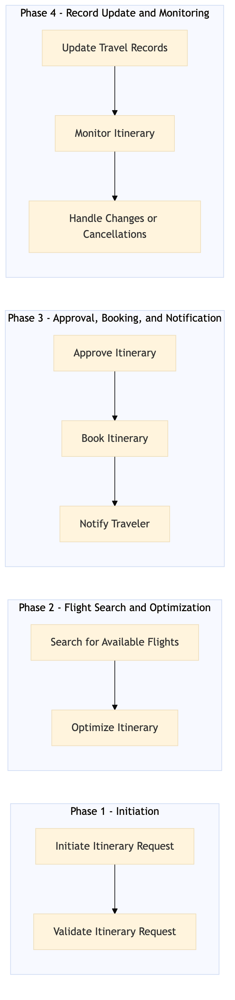

Process for constructing multi-leg and round-world itineraries using a combination of OTA and TMC systems.
| Trigger | Request from the Travel Management Center (TMC) to create or modify an itinerary for a corporate booking. |
| Outcome | A fully constructed, optimized, and approved multi-leg or round-world itinerary that meets all corporate travel policies and requirements. |
| Systems | Concur T2 Concur Expense Expedia Open World Partner Central Amadeus NDC Sabre GDS Travelport AWS SageMaker Snowflake Kafka Salesforce Tableau S/4HANA International SOS |

Click to enlarge
| Step | Name & Pain Point | Role | System | Input | Output | KPI | Flags |
|---|---|---|---|---|---|---|---|
| 1.1 | Initiate Itinerary Request Handling complex multi-leg requests | Travel Manager | Concur T2, Concur Expense | Itinerary request details (traveler information, travel dates, destinations) | Itinerary request logged in the system | Time to log itinerary request < 5 minutes | ⚠ Exception |
| 1.2 | Validate Itinerary Request Policy compliance checks | Travel Manager | Concur T2, S/4HANA | Itinerary request details | Validation report (compliance with corporate policies) | Time to validate itinerary < 10 minutes | ◆ Decision |
| 2.1 | Search for Available Flights Handling flight availability issues | Travel Manager | Expedia Open World, Partner Central, Amadeus NDC, Sabre GDS, Travelport | Itinerary request details (travel dates, destinations) | List of available flights with prices and itineraries | Time to search for flights < 30 minutes | ⚠ Exception |
| 2.2 | Optimize Itinerary Balancing cost and travel time | Travel Manager | AWS SageMaker, Snowflake, Kafka | List of available flights | Optimized itinerary (best price, shortest duration, etc.) | Time to optimize itinerary < 15 minutes | ⚠ Exception |
| 3.1 | Approve Itinerary Approval process delays | Travel Manager, Travel Approver | Concur T2, Concur Expense | Optimized itinerary details | Approved itinerary | Time to approve itinerary < 5 minutes | ◆ Decision |
| 3.2 | Book Itinerary Payment and booking confirmation issues | Travel Manager | Expedia Open World, Partner Central, Amadeus NDC, Sabre GDS, Travelport | Approved itinerary details | Confirmed booking with payment processing | Time to book itinerary < 10 minutes | ⚠ Exception |
| 4.1 | Notify Traveler Ensuring timely communication | Travel Manager, Travel Approver | Salesforce, Tableau | Confirmed booking details | Notification sent to traveler | Time to notify traveler < 5 minutes | ⚠ Exception |
| 4.2 | Update Travel Records Data integrity and consistency | Travel Manager, IT Support | Concur T2, S/4HANA, International SOS | Confirmed booking details | Updated travel records in the system | Time to update records < 10 minutes | ⚠ Exception |
| 5.1 | Monitor Itinerary Real-time monitoring and response | Travel Manager, IT Support | Concur T2, S/4HANA, International SOS | Confirmed booking details | Itinerary status updates (flight changes, cancellations) | Time to monitor itinerary < 5 minutes | ◆ Decision |
| 5.2 | Handle Changes or Cancellations Managing dynamic travel plans | Travel Manager, IT Support | Expedia Open World, Partner Central, Amadeus NDC, Sabre GDS, Travelport | Change or cancellation request | Updated booking details with payment adjustments | Time to handle changes < 10 minutes | ⚠ Exception |